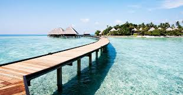

la plage d'assinie
A une petite heure de route d’Abidjan, Assinie est un paisible village situé au bord de la lagune Aby et du Parc national marin des îles éhotilé. Parallèlement au plan d’eau lagunaire, sa plage de sable fin s’étire sur 30 kilomètres le long de l’Océan Atlantique. La richesse naturelle d’Assinie, sa beauté et son calme en ont fait un endroit à part. Tellement à part, qu’à la fin des années 70, le Club Méditerranée y a ouvert un village de vacances.